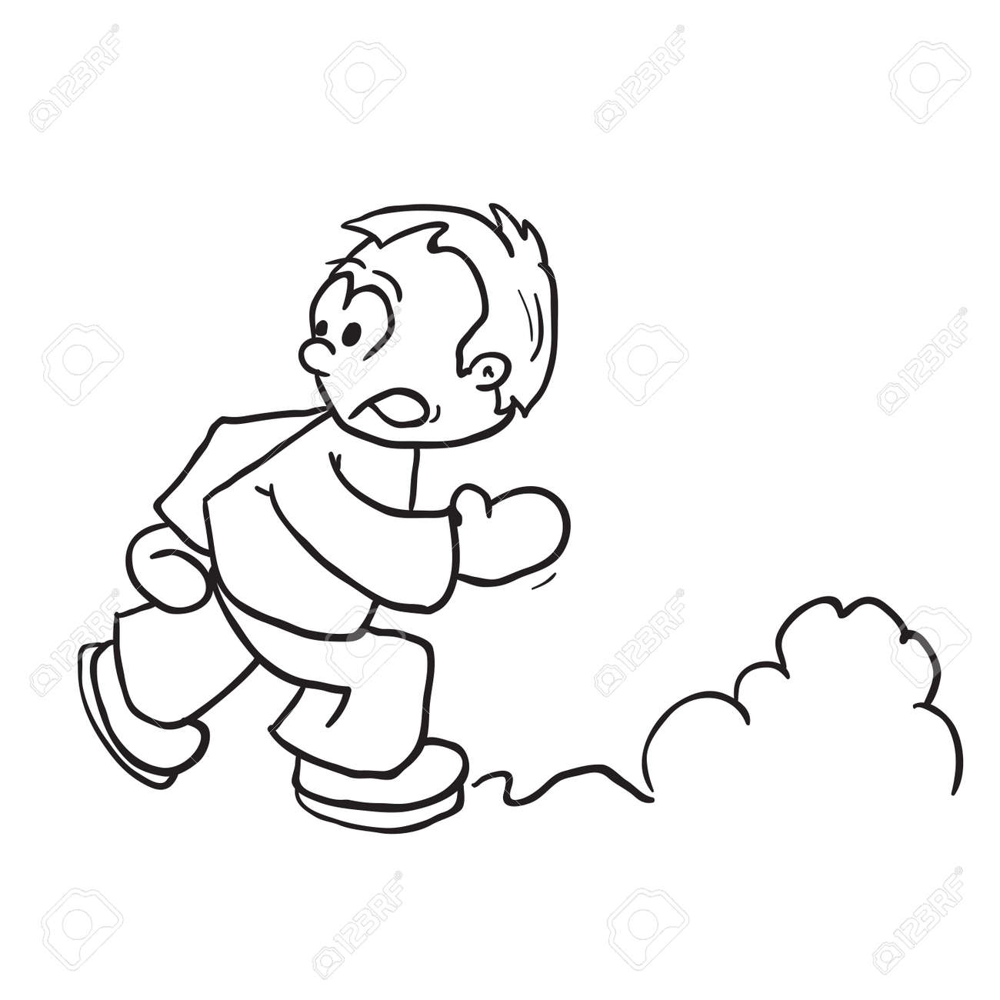

Pagina 3

Orion había sido invitado como participante sustituto, a pesar de que trató de negarse en repetidas ocasiones, finalmente aceptó. La carrera estaba a punto de empezar, temeroso de muchas cosas, Orion se estaba dando por vencido incluso antes de empezar. No confiaba en sus habilidades y creía que no iba a ser capaz de lograrlo.
La carrera empieza y Orion aún en su nube llena de malos pensamientos, ve poco a poco acercarse a su grupo, cada uno pasando la bandera al siguiente jugador. Cada vez mas cerca de Orion, Orion pensaba cosas que lo nublarían aún más, cuando se percató, se dió cuenta que estaba en un estado de shock debido al nerviosismo.